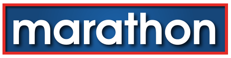

대표 로고대표 브랜드 마크
대표 로고대표 브랜드 마크마라톤 스포츠 Marathon Sports
마라톤 스포츠(Marathon Sports)는 1980년 에콰도르에서 시작한 스포츠용품 소매 체인이다. 에콰도르를 대표하는 멀티브랜드 스포츠용품 소매업체다.
최종 업데이트
마라톤 스포츠는 어떤 브랜드인가
마라톤 스포츠(Marathon Sports)는 1980년 에콰도르에서 시작한 스포츠용품 소매 체인이다. 에콰도르를 대표하는 멀티브랜드 스포츠용품 소매업체다.
마라톤 스포츠는 어떻게 봐야 할까
마라톤 스포츠는 에콰도르를 대표하는 멀티브랜드 스포츠용품 소매 체인이다. 설립·운영 주체, 업태·성격, 시장 포지션을 함께 보면 스포츠·아웃도어 안에서의 위치가 또렷해진다.
마라톤 스포츠는 어떻게 시작되고 성장했나
1980년 로드리고 리바데네이라가 창립해 1981년 키토에 1호점을 열었다. 에콰도르 축구 국가대표팀 용품 공급사로도 알려졌으며 2025년 멕시코 이노바스포르트에 인수됐다.
마라톤 스포츠의 브랜드 아이덴티티는 무엇인가
1975년 설립된 뉴잉글랜드 러닝 소매 브랜드로, 2026년 51주년을 맞아 시각 정체성을 새롭게 정비했다. 달리기의 움직임과 결정적 순간에서 영감을 얻은 굵은 아이콘과 다듬어진 워드마크를 결합해 현대적이고 또렷한 인상을 준다.
세대를 이어온 기존 로고는 헤리티지 서사와 복고 상품에 한정해 유지한다.
마라톤 스포츠의 대표 제품과 서비스는 무엇인가
스포츠 의류·신발·장비를 멀티브랜드로 소매한다. 주요 글로벌 스포츠 브랜드를 유통한다.
마라톤 스포츠는 지금 어떤 상태인가
마라톤 스포츠 로고는 어떻게 변해왔나
대표 로고대표 브랜드 마크
대표 로고 1보관 이미지 1자주 묻는 질문
마라톤 스포츠는 언제 설립되었나요?
마라톤 스포츠는 1980년 설립되었습니다.
마라톤 스포츠는 어떤 산업의 브랜드인가요?
마라톤 스포츠는 스포츠·아웃도어 분야의 브랜드입니다.
마라톤 스포츠의 브랜드 아이덴티티는 무엇인가요?
1975년 설립된 뉴잉글랜드 러닝 소매 브랜드로, 2026년 51주년을 맞아 시각 정체성을 새롭게 정비했다.
마라톤 스포츠의 대표 제품은 무엇인가요?
스포츠 의류·신발·장비를 멀티브랜드로 소매한다.
마라톤 스포츠는 현재 어떤 상태인가요?
국가: 에콰도르(키토); 산업: 스포츠·아웃도어
마라톤 스포츠의 본사는 어디에 있나요?
마라톤 스포츠의 본사는 키토에 있습니다(위키데이터 기준).
마라톤 스포츠의 공식 웹사이트는 어디인가요?
마라톤 스포츠의 공식 웹사이트는 https://www.marathon.store 입니다.
출처와 검증
마라톤 스포츠 관련 참고: 공식 웹사이트 · 위키데이터 Q3027516 · 영어 위키백과. 브랜드명은 한글과 원어를 함께 표기하되 데이터에 없는 표기는 만들지 않습니다. 기원 국가·설립연도는 검수된 정의문에서 확인된 값을 우선하고, 없을 때만 공식 웹사이트 URL이 일치하는 위키데이터 개체의 값을 씁니다. 위키데이터 값은 2026-09-07 기준입니다.